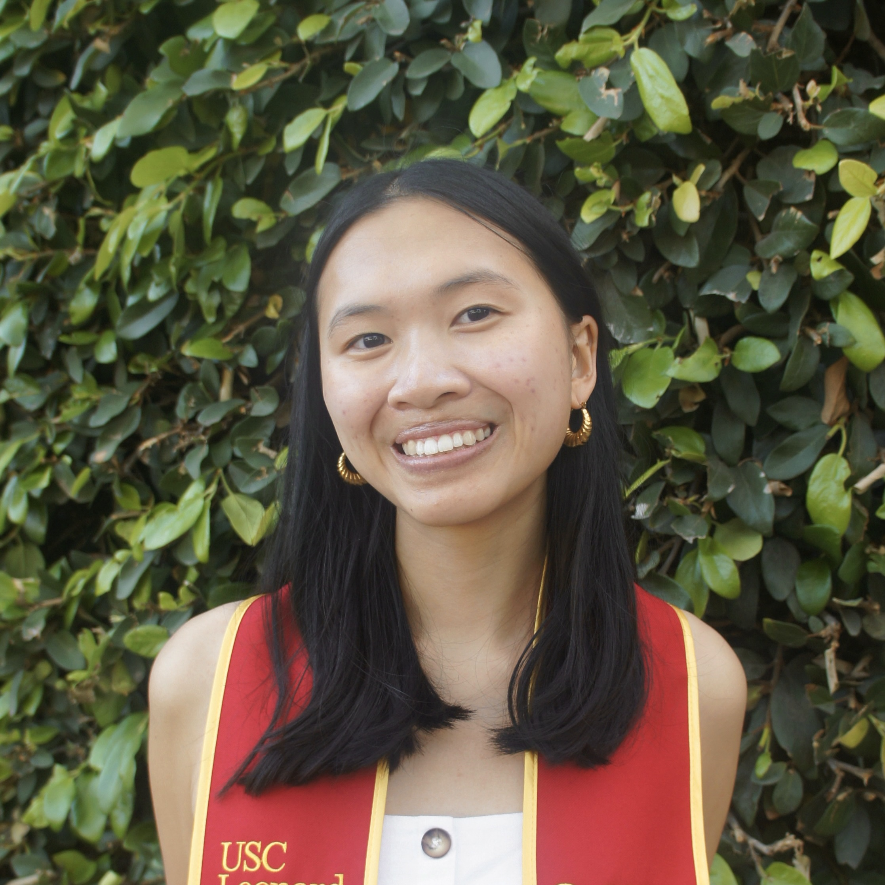

Carissa Liu
HELLO!
I'm a senior at the University of Southern California
studying gerontology. This website serves as a collection
of passion projects and professional development experiences
that reflects my academic and public relations backgrounds.